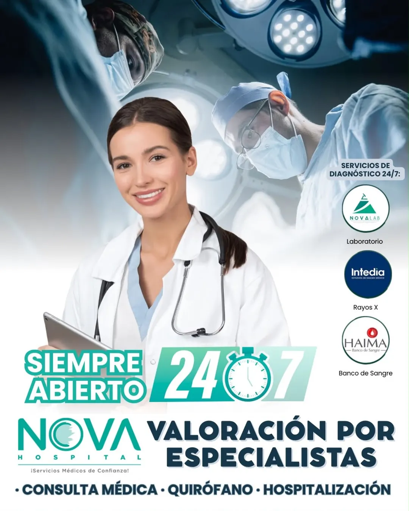
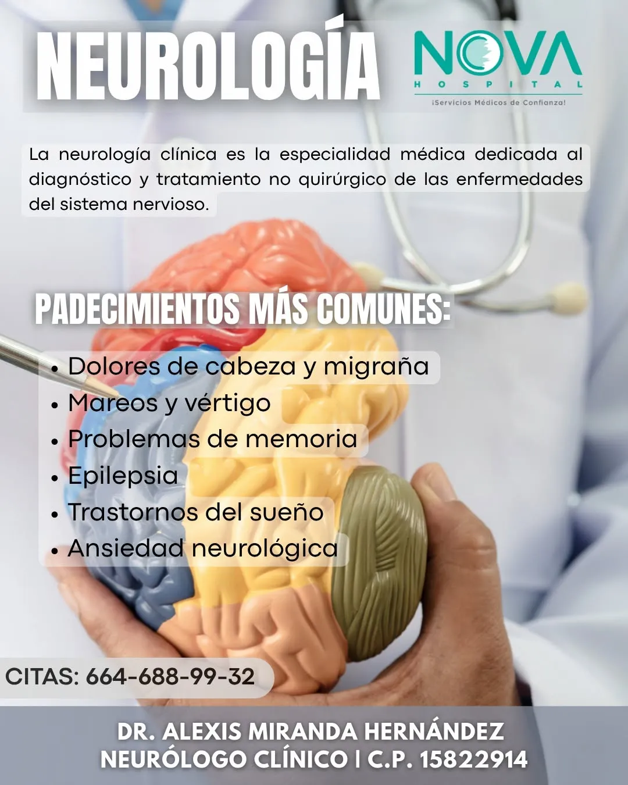
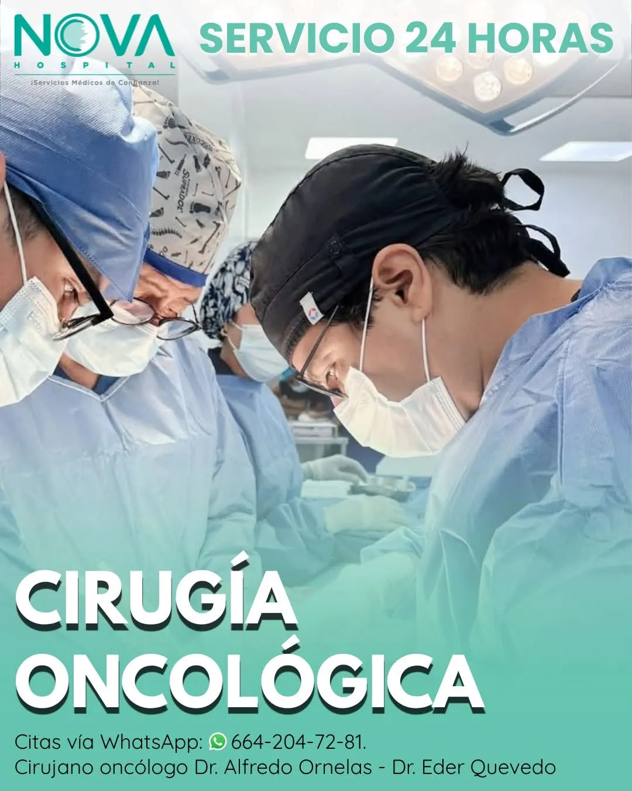

Internal Medicine
Comprehensive adult care: diabetes, hypertension, infectious, autoimmune and circulatory diseases, without surgery.
Book evaluationEmergency care, surgery, inpatient care and specialist evaluation in one place. Lab, X-ray and blood bank available day and night.




Specialist evaluation, consultations, surgery and inpatient care under one roof in Tijuana.
Comprehensive adult care: diabetes, hypertension, infectious, autoimmune and circulatory diseases, without surgery.
Book evaluationDiagnosis and treatment of migraine, vertigo, epilepsy, memory problems and sleep disorders.
Book evaluationSurgical oncologists for cancer surgery, backed by a 24-hour operating room and inpatient care.
Book evaluationHospital quotes, admission requirements, birth certificate and major medical insurance support.
Book evaluationAlways open. Immediate evaluation by physicians and specialists at any hour, every day.
Book evaluationEquipped operating rooms and patient rooms for recovery with round-the-clock monitoring.
Book evaluationLaboratory, imaging and blood bank on site for fast, safe medical decisions.
Get all the information you need for your baby’s birth at Hospital Nova.
Yes. Hospital Nova is always open, 24 hours a day, 7 days a week, with medical consultations, operating rooms, inpatient care and specialist evaluation.
Call 664 688 99 32, message us on WhatsApp or fill out the contact form. We will reply to confirm the date and time.
Yes. We offer 24/7 diagnostic services: NovaLab clinical laboratory, Intedia X-ray and imaging, and Haima blood bank.
Yes. We share the hospital quote, admission requirements, recommendations, birth certificate paperwork and major medical insurance options.
Yes. We welcome patients from San Diego and Southern California seeking specialist care in Tijuana. Message us and we will guide you in English or Spanish.
Clear medical information written for patients and families.
Differences between vaginal birth and C-section, when each is recommended, recovery, and what to ask the hospital before your baby arrives.
Read articleAn internist is the adult-care specialist who coordinates diagnosis and treatment of complex conditions affecting several organs.
Read articleMost headaches are not serious, but some signs need immediate neurological evaluation. Learn to recognize them.
Read article